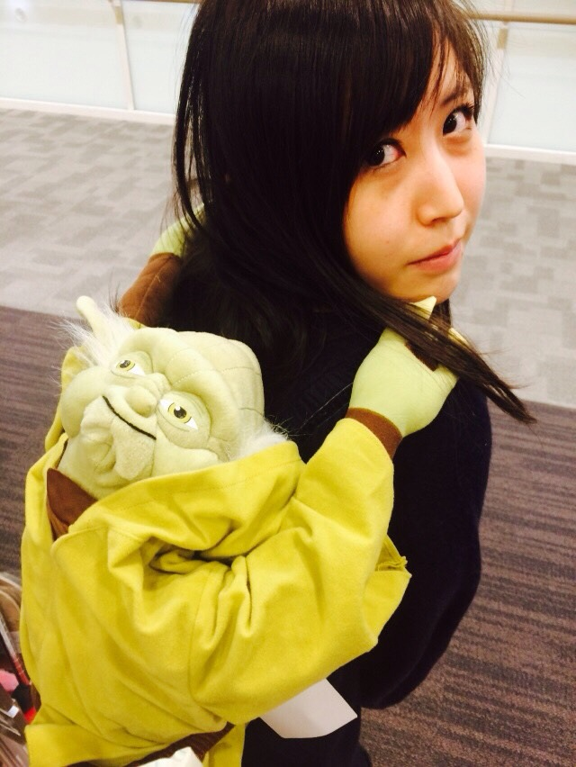
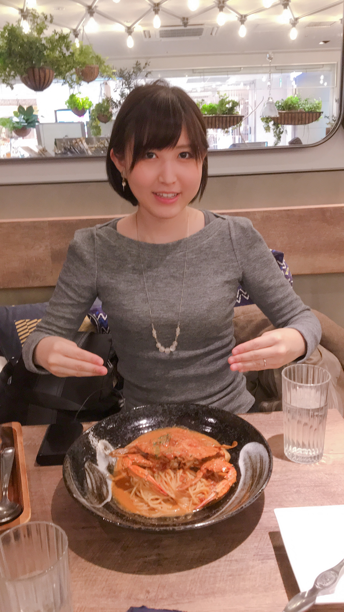

裂け目を縫う調整弁として
〜『私には帰る“場所”がない』制作秘話〜（後編）
出版、講演会、ポッドキャスト、Web・動画制作——多角的な活動の先に、優さんが引き受けようとしている役割とは何か。二項対立を希釈する装置、スティグマとのラポール、母娘という同質性、学問への探究、文体の必然性、そして読者への命綱までを聞く。
このインタビューについて
本稿は、デビュー作『私には帰る"場所"がない』の出版を控える著者・優さんへの独占インタビュー後編です。活動のビジョン、マイノリティへの視点、母娘関係、言論文化、学問、文体、読者へのメッセージを収録しています。
イシューの裂け目を縫う
優 「 はい、文章そのものをメディウムとしたり、日々の活動や実際に喋っている様子からなにか伝わるものがあればと、恥を忍んで泥臭く遮二無二届けようという気持ちは強いです。ではなにを届けるかというと、やはりそのときのイシューの裂け目を縫うような調整弁として、不遜ながら役割を担わせていただきたいと考えました。
本書では「分断および相対主義についてのエッセイ」にも述べている内容ではあるのですが、二項対立が勃発した際になるべくそのどちらにも与しない立場というか、極論を希釈するような装置になれればと思っています。他方で、ときには極地的な言説が求められる場面も当然ありますので、必要に応じてですね。
当然、「中立はときに差別を増長させる！」というご批判もあろうかと拝察しております。そうした反証について紙幅を割いて文中で述べておりますので、ご興味のある方はぜひ該当ページだけでもご覧くださいませ。

スティグマとラポール
優 「 私自身が、様々な社会的地位の方々と接してきたからにほかなりません。自分の交友関係自体がエコーチェンバーになっていないため、これでも幾許か相対的に眺められているのかもしれません。自分が生粋の不登校および引きこもり当事者だと思うのが、昔から共同体に上手く馴染めず、時折その集団力学から腫れ物に触るように取り扱われてきた経緯が記憶の中でトラウマティックにこびりついており、今でも当時と似た境遇に陥ると身体が強張って動けなくなるため、何も関係のない無辜の方々を困らせてしまい痛み入るのですが、そこで圧倒的「マイノリティ」としてポジショニングした経験が強く自分を貫いています。
そうした部分で強烈な孤独を味わって、社会的スティグマを刻印されている人と共鳴したのだと思います。例えば、腫れ物に触るように接するほど、相手は暴れようとします。これはひとつの「戦闘状態」であり、ひとつの闘争本能なのでしょう。「怖い」「気持ち悪い」「あっちいって」「話しかけないで」。こう思うほど、関係や状況は拗れていきます。なぜなら考えている思考は大なり小なり必ず伝わる仕組みになっているからです。だからこそ、真から受容や理解を重んじる態度（Attitude）で相手の実存を尊重する。この姿勢こそがラポール（信頼関係）を形成するうえで非常に重要になってくるのだと思います。
社会的スティグマを持たれている方々は実際のところなにも怖くないです。それは、こちらの過度の警戒心に傷ついて暴れて自分を守ろうとしているだけです。そうした全体像に気づいたら、傍から見て不思議なほど、驚くほど少数派の方々とのリレーションシップが進むような気がするんです。」

鏡の中のフレネミー
優 「 河合隼雄が―どの著書だったかは失念してしまったのですが（『昔話と日本人の心』だったかな？）、親と子、そこに男女を当てはめた際に、母娘がいちばん厄介で非常に難解な関係性だそうです。というのも、これから述べる言葉をそのまま受け取って炎上しないでくださいね。父子では子が父を「象徴的に」父親殺しができるのですが、象徴的母親殺しというのは達成できないそうなんです。この物騒な言葉とは何ぞやという話になるかと思いますが、心理学や文学の用語なんですね。
心理学では、往々にして母親が「投影」の主体になります。投影とは、自分を最初に養育した特別な他者のことを指し、この場合は往々にして母親であることが多いです。つまり、主体そのものが主体たらしめる元素なのです。一番核になる部分です。その中心地は原理的に破壊できません。なぜならその人それ自体が瓦解してしまうからです。だからこそ母娘は拗れる。これが母息子のパターンだと比較的それほど複雑でないようです。それは突き詰めるとギリシャ神話などの古典によく表れている、というわけなんですね。昔話は元型（アーキタイプ）そのものだと実に河合隼雄は喝破しましたが、なぜ古典が古典せしめるのかを、示唆してならないような気がしています。」

日本と海外の言論空間
優 「 そうですね。私は海外に行ったことがないので、Xのような媒体で駅前留学のようなかたちをとれるのが本当に有難い話なのですが、海外では自他共に賛する文化がありますよね。もちろんゆきすぎるとナルシスティックだとは言われるし、謙虚は日本と同じく尊敬を集める。でも、基本的態度は「ポジティブじゃないなど格好悪いよブラザー」という感じなのですね。
アドラーで言うところの「共同体感覚」が価値観の基底にあり、まさに「人類皆兄弟」を地でいっているのですね。凄く鷹揚としている。傍ら日本だと、自他ともに批判的に考察する文化が激しくて、それが良かれ悪しかれスケールしない様相を帯びている。集団主義のようでいて、その実極めて個人主義的なのではないかと感じています。それが良いか悪いかはまたベクトルの向きが違う話だとは思いますが…。 私は、自動翻訳でフィルターバブルが弾け風通しが良くなっていく現代に希望を見ています。それぞれが物理的には引き続き棲み分けをしながら、傍ら本来ドメスティックであった知見それ自体は国際化され文明が分配されてゆく。非常に効率的で合理的なニューエラになっていると思います。私は未来をそれほど悲観しておらず、人類は賢明に先鋭化されているので、これからの行く末が楽しみでなりません。」
放送大学と慶應義塾大学
優 「 私の場合は行政のお仕事に少し携わっていた時分に、「このままではいけない。大学に通わなければ。」と学位の必要性を痛感し、ちょうど恩師から教わった放送大学の入り口の広さに感銘を受け飛び込んだことが全ての始まりだったように思います。実は、専攻は政治経済周りでいま関心がある分野とはまた別ベクトルを学んでいたのですね。その後無事に学位を取得しました。
そして、慶應義塾大学では、放送大学で獲得したロールモデルである―よもや似ても似つかないですが―シモーヌ・ヴェイユの背景を探り進めるべく文学部で哲学を専攻しました。最初にそこで学んだのは、歴史（西洋史）です。実は―ほんとうはこういうことはあまり公で言わない方がよいのかもしれませんが、科目を履修するときにはイングランドがイギリスであることも、カトリックとプロテスタントの区別も知らず、神聖ローマ帝国がてっきりローマにあると勘違いするほど歴史に疎かったんです。でも、必死に猛勉強し、最低評価は免れた上で単位を取得できました。慶應での学びは―途中で中退してしまいましたが―、脳に極限まで負荷をぐわっとかける意味で実に筋トレに近かったです。
なにしろ両大学でリカレント教育あるいは生涯学習を学ぶうえで、現役以前以後といった線引きがあまりに意味をなさない指標だと気づきました。また、学歴に対する劣等感のような心境も、社会人学生を経て霧散していきました。それはひとえに、机上の座学のみならず、生きるうえでの視座そのものを何段階も繰り上げてくれたような心持ちでいるのです。そうした意味で、私は大学という教育機関に育てられたのですね。自分をイチから育て直ししていただいたようで、改めて感謝しています。」
文体は選択ではなく必然
優 「 時期によって文体はばらばら、なんですね。緩やかで柔和であったり、傍ら四角張っていたり。まさに「本当に同じ人が書いたの？」と思われるかもしれませんが、文章のみならず文体それ自体がなにかメッセージ性を持つような満ち引きが可視されれば、それすら懊悩の一部になり、読む人の心の変容に寄与をもたらすのではないか、そう考えました。したがって、文体を「選択」したというよりは、そうするしかなかった、そう書かざるを得なかった「必然性」のほうが近いかもしれません。
また、作品によってはひらがなひとつとっても、開かれていたり閉じていたりします。これは、そのときどきのエッセンスや社会に漂う空気感をパッケージングして、読むたびに「ああ、あの時期はこんな議題が湧き上がっていたね。」と懐かしめるようなある種の「時事通信」として本書を興じていただければ望外の喜びです。
読者へ向けて
優 「 これは、本書のあとがきにも書いていることなのですが、兎にも角にもお伝えしたいのは、孤独を感じている全ての方へ「あなたはひとりじゃないよ」という命綱になるような誰かの確かな一冊になりたいのです。決して人生を諦めず生き抜く限り、生き延びる限り、あなたの「帰る場所」は必ず出来る、というのは、私なりの生きる地獄を掻い潜ったような自分にとりひとつの真実でした。
日本は、とてもいい国で私も大好きですが、治安は相対的に良くとも、なにしろ自殺率が激しいです。とりわけ、若年層の自死についても非常に胸を痛めています。本書に通底しているのは、さまざまな考え方を学術的な知見に基づいて提示していき、生き馬の目を抜く荒野を伴走しながら駆け抜けられるような想いを込めています。
既にまだ出版前に帯文を頼んだ方や試作をお目通しくださった方より「今までに見たことのない面白い本だ」と好評いただいています。面白い、というのは読み応え、という面でもそうですが、きっとあなたの人生の一部の中に深く残るような、それでいて「処方箋」になるような、御守りのような本棚のひとつになれたらと、そう願っています。」

終わりに
三部にわたるインタビューは、ここで一区切りです。空白を緊急避難と呼び直し、点と点をつなぎ、裂け目を縫う調整弁であろうとする。その先にあるのは、大きな宣言よりも、孤独な誰かの手元に残る一冊です。